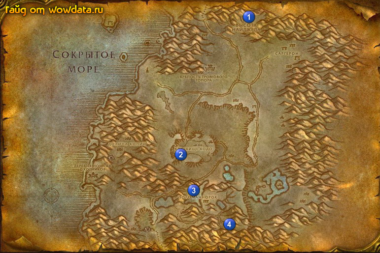

1) Сделайте Высота Найджела 1 вашим домом.
2) Начните <Путями Алого ордена>.
3) Идите вниз и начните <Реактивы для Поисковой корпорации>.
4) Бегите начните <Сбор эктоплазмы> 2 (47, 61).
5) Бейте демонов для <Реактивы для Поисковой корпорации> 3 (51, 75).
6) Бейте Опустошитель-отрекшийся 4 (61, 90) для <Путями Алого ордена> и тут же делайте <Сбор эктоплазмы>.
7) Идите назад и закончите <Сбор эктоплазмы> 2 (47, 61).
8) Вернитесь по руне в Высота Найджела 1.
9) Закончите <Путями Алого ордена>, игнорируйте следующую часть.
10) Пройдите на юг от гостиницы и закончите <Реактивы для Поисковой корпорации>, начните <Реактивы для Поисковой корпорации>.
11) Летите в , сядьте на корабль в Гавань Менетил и летите в Стальгорн.
12) Закончите <Реактивы для Поисковой корпорации>.
13) Выучите новые скилы.
14) Летите в Пиратская бухта.